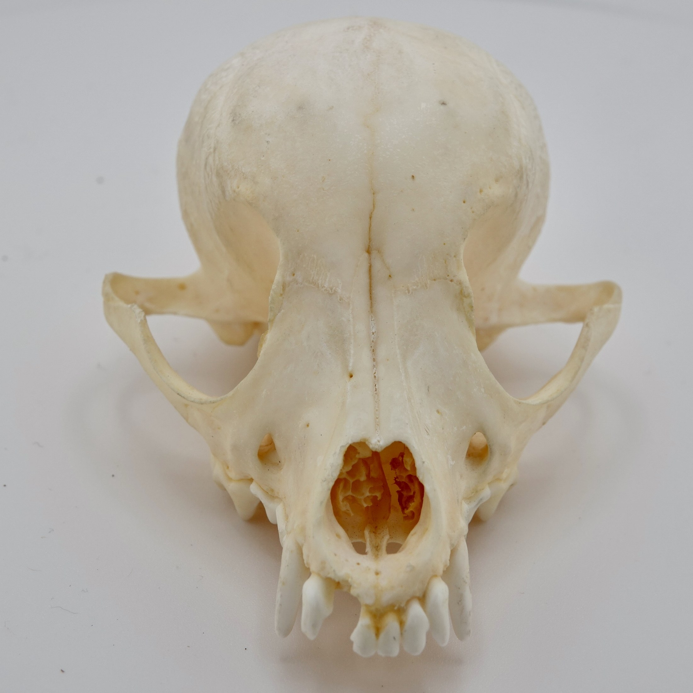
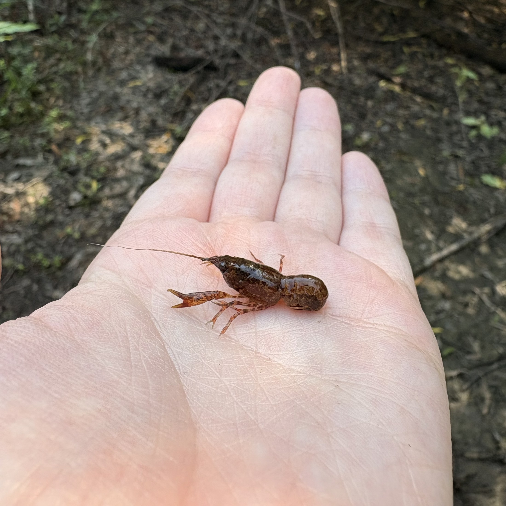
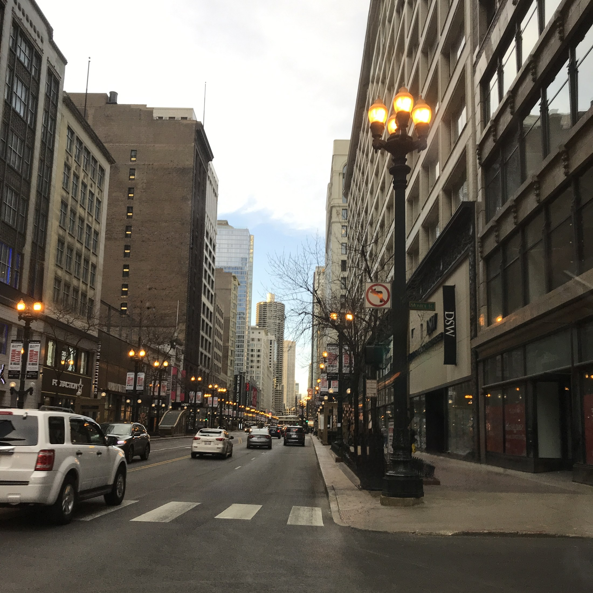
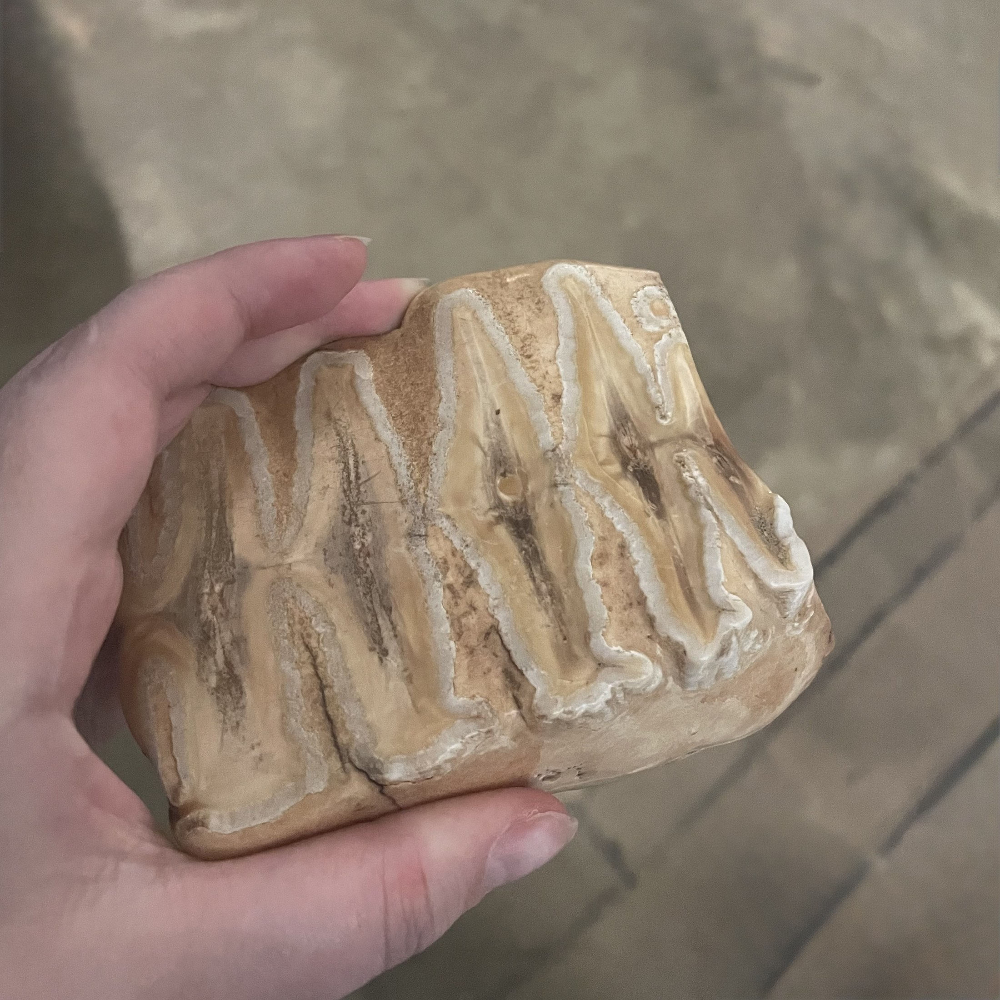

Research Projects

Chihuahua, donated postmortem to the KU Mammalogy collection.Functional Morphology of Domestic Dogs and Cats
Artificial selection has radically reshaped the morphology of domestic animals. Understanding how and why these changes occur matters not just for the study of domestication itself, but also as a model for how large-scale morphological shifts happen more broadly. Additionally this work has direct implications for animal welfare.

Cambarellus shufeldtiiCrayfish Ecomorphs
Missouri is home to 38 species of crayfish, yet 23 of them are considered a conservation concern according to the Missouri Department of Conservation. Across these species, crayfish occupy a remarkable range of freshwater habitats, making them an important model for understanding morphological convergence and diversification across heterogeneous environments, while also making them a valuable focus for conservation efforts.

ChicagoUrban Squirrels
Animals are constantly evolving to adapt to changes in their environment. Studying how species adapt to urban environments lets us observe evolution in real time and provides important context for conservation efforts. This project is in collaboration with Elizabeth Carlen's work on how urban demographics shape population structure.

Elephant ToothSpatial Behavioral Patterns of Captive African Elephants
Examined the spatiotemporal behavioral patterns of African elephants housed in a zoo, focusing on stereotypic behaviors. By recording where and when these behaviors occurred across the enclosure and throughout the day, the study identified the spatial zones and time windows in which stereotypy was most pronounced. This informed targeted enrichment strategies to improve welfare for elephants in captivity.